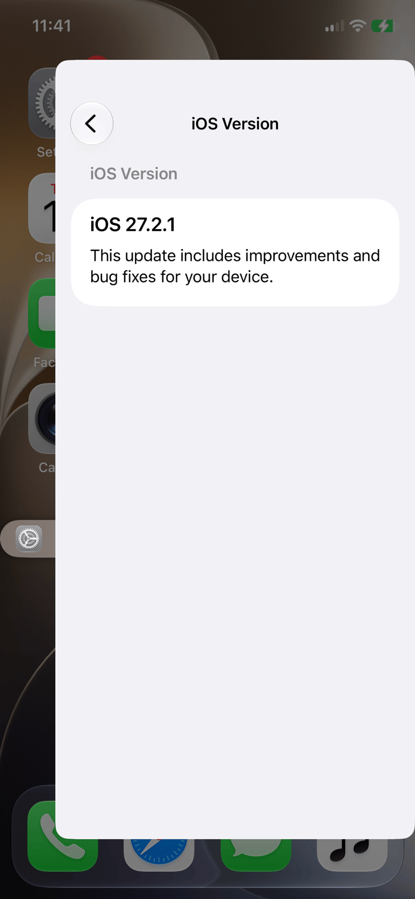
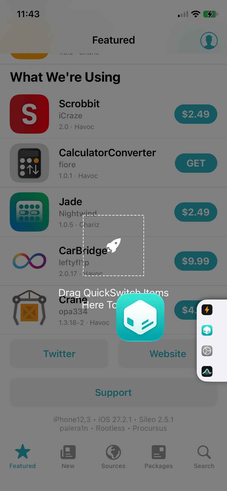
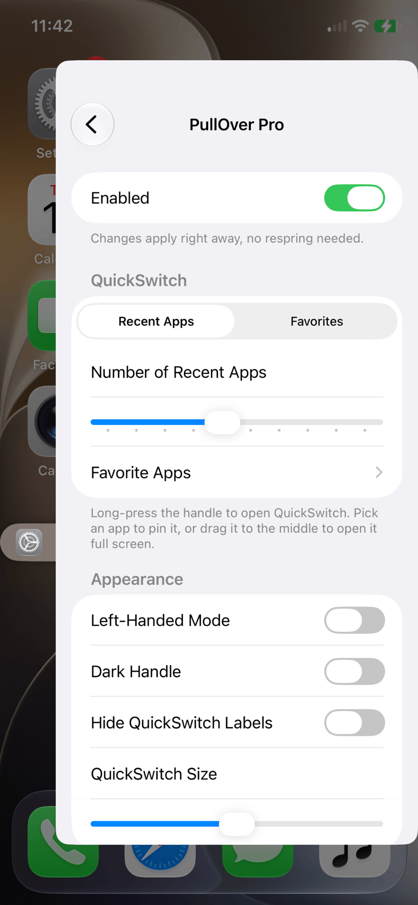
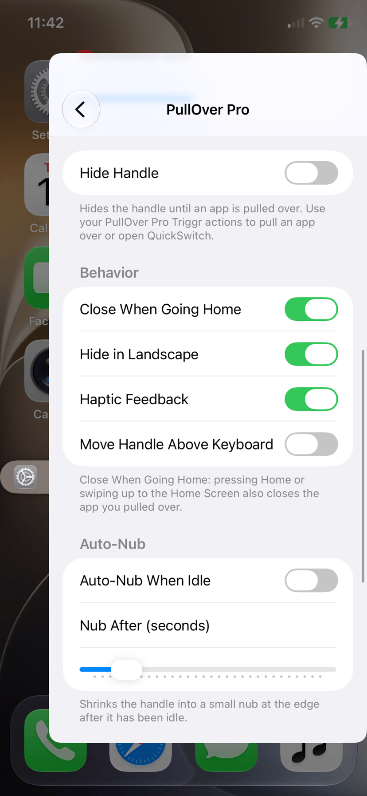

PullOver Pro
PullOver Pro
Pull over any app, anywhere, from a handle at the edge of the screen.
Add the repo, then search PullOver Pro.
A small handle sits at the edge of the screen. Pull it and your app slides in over the one you are using, still live.
- Tap or pull the handle to slide the app in. Push it back to tuck it away.
- QuickSwitch: long-press the handle to pick from your recent apps or favorites. Tap one to pull it over, or drag it to the middle to open it full screen.
- Settings for left-handed mode, a dark handle, QuickSwitch size, hiding in landscape, staying above the keyboard, closing when you go home, and shrinking the handle to a nub when idle. Changes apply right away, no respring.
- Version
- 3.0.0
- Jailbreak
- Rootless, RootHide




What's New in 3.0.0
- Out of beta.
- Closes for Control Center and Notification Center: the pulled-over app closes as soon as either starts coming down.
- Fixed: slider values in settings were cut off on iOS 16.
- Shorter credits, and Help & Support rows in settings.
Works on
- iOS 15 to 27. Rootless and RootHide jailbreaks.
- Tested by hand on an iPhone 11 Pro (iOS 27.2.1). Earlier builds ran on an iPhone 11 Pro Max (iOS 16.2), an iPhone XR (iOS 16.0.3) and, as the RootHide build, in an iOS 27 virtual iPhone.
- If it ever sends your phone to Safe Mode, open Sileo (it still works there) and uninstall it. Then tell me.
Good to know
- An app that's already open full screen can't be pulled over at the same time.
- Needs AltList. Sileo installs it for you. On iOS 27, open its settings from the TweakSettings app.
Credits
Original tweak by c1d3r (@c1d3rdev), GPL-3.0. Source.
Changelog2 earlier versions
3.0.0
- Out of beta.
- Closes for Control Center and Notification Center: the pulled-over app closes as soon as either starts coming down.
- Fixed: slider values in settings were cut off on iOS 16.
- Shorter credits, and Help & Support rows in settings.
3.0.0 Beta 1
- First Rootless and RootHide release, rebuilt for iOS 15 to 27. Apps that aren't running start in the background when you pull them over, and favorites are picked with AltList.
- The original's paid unlock is gone. It's free, and the source is public under the GPL, like the original.